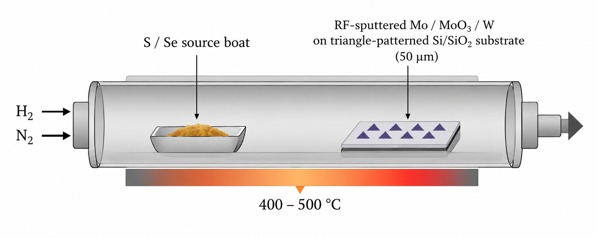
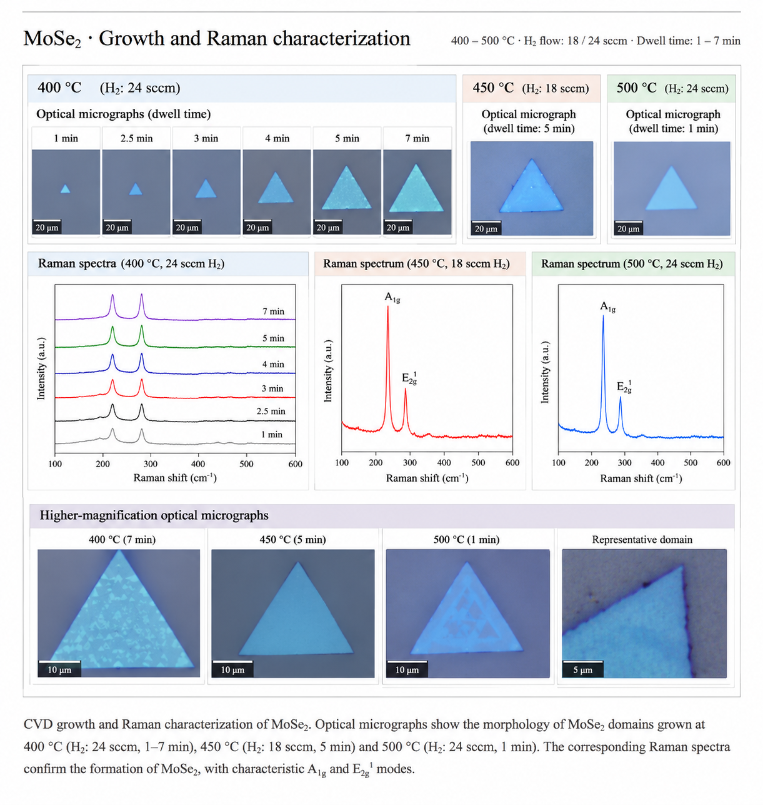
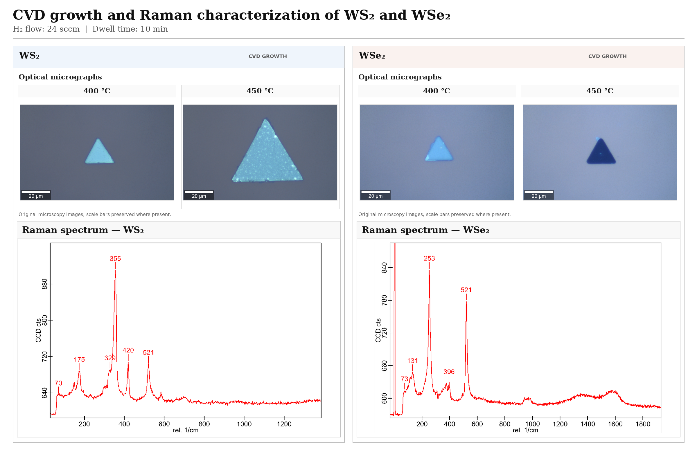

Research project · 01
Ongoing research
CVD Growth and Characterization of 2D Semiconductors
Investigating the growth of MoSe₂, WS₂ and WSe₂ on lithographically patterned Si/SiO₂ substrates, focusing on precursor selection, temperature, hydrogen flow and dwell time.

EXPERIMENTS
Experimental design
| Study | Precursor layer | Variables investigated |
|---|---|---|
| MoSe₂ growth | Mo and MoO₃ | 400, 450 and 500 °C |
| Hydrogen-flow study | MoO₃ | 14, 20 and 24 sccm H₂ |
| Growth-time study | MoO₃ | 1, 2, 3, 4 and 5 min at 24 sccm H₂ |
| WS₂ growth | W | 400–500 °C |
| WSe₂ growth | W | 400–500 °C |
DATA
Results & data
MoSe₂ · Growth and Raman characterization
400–500 °C · H₂ flow: 18 / 24 sccm · Dwell time: 1–7 min

WS₂ and WSe₂ · Growth and Raman characterization
400 – 450 °C · H₂ flow: 24 sccm · Dwell time: 10 min

RESEARCH ROLE
My contribution
- 01Conducted CVD growth studies using RF-sputtered metal or metal-oxide layers on patterned Si/SiO₂ substrates.
- 02Investigated precursor selection and process conditions for MoSe₂, including temperature, hydrogen flow and dwell time.
- 03Extended growth experiments to WS₂ and WSe₂ using W-containing precursor layers.
- 04Documented experimental morphology and performed image analysis or material characterization where applicable.
LITERATURE
References
-
Singh et al., “Raman spectroscopic investigations of the selenization of MoO₃ in the chemical vapor deposition process to form two-dimensional MoSe₂,” Applied Surface Science, 538, 147946 (2021).
Read paper ↗ -
“Revealing the microscopic CVD growth mechanism of MoSe₂ and the role of hydrogen gas during the growth procedure,” Nanotechnology, 29, 314001 (2018).
Read paper ↗ -
“WS₂ nanotube formation by sulphurization: Effect of precursor tungsten film thickness and stress,” Materials Chemistry and Physics (2016).
Read paper ↗ -
“Optimisation of processing conditions during CVD growth of 2D WS₂ films from a chloride precursor,” Journal of Materials Science (2022).
Read paper ↗ -
“Thickness-dependent Raman spectra of CVD-grown WSe₂ thin films,” New Physics: Sae Mulli, 65, 633–637 (2015).
Read paper ↗